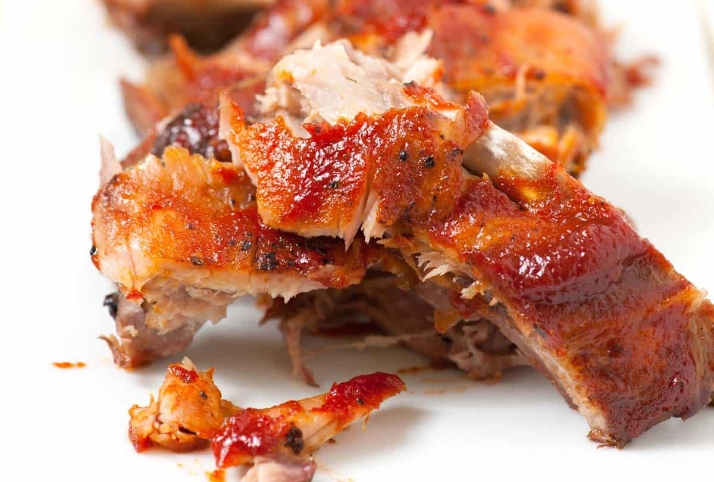

Oven Baked Ribs

Description
Barbeque is one of the most delicious forms that food can take. At it's core it is one of the most primitive forms of cooking: meat and fire. However, as anyone who has barbequed before can attest, it is not as simple as it may seem. There are so many different kinds of setups, from a cheap grill to thousand dollar smokers, and all of take a lot of effort to do right. Sometimes you want that barbeque style without all the fuss, which is where the humble kitchen oven comes in.
Ingredients
- Rack of pork ribs
- Garlic
- Salt
- Black Pepper
- Sweet Baby Ray's
Steps
- Preheat oven to 350 F.
- Peel 1 clove of garlic.
- Place down a 2 sheets of aluminum foil on top of each other. This should be large enough the rack of ribs can sit in the middle with a few inches of foil sticking out on all sides.
- Place the ribs on the foil with the inside of the rib facing up.
- Lightly coat the surface of the rib with salt and pepper. Enough to cover the whole side, but not so much that it will become too salty.
- Flip the rack of ribs over. Now the outside of the rib should be top up.
- Salt and pepper this side the same as the other.
- Place garlic gloves on the foil along the outside of the rack of ribs.
- Fold up the extra aluminum foil ontop of the ribs. Make sure there are no holes where liquid can leak from.
- Get another sheet of aluminum foil and place over the rack of ribs, and tuck the extra foil along the edges underneath the rack of ribs. If done correctly, the entire rack of ribs should be sealed in foil.
- Place the sealed rack of ribs onto a metal sheet pan (to catch any potential drippings), then slide into the oven which should now be up to temp.
- Wait 3 hours. Do not touch or open the oven during this time. If you must, turn on the oven light and peek through the window to make sure nothing wonky is happening.
- After 3 hours, take out the rack of ribs (keep on metal sheet pan), place ontop of oven to let it cool a bit.
- Once it is cool enough to touch the foil, take off only the top layer of foil. The meat should be cooked, but will not look great at this point.
- Adjust the edges of the bottom foil so that the entire top surface of the ribs is exposed. Be careful not to let any juices leak out. The bottom alumin foil should still hold everything in.
- Rub Sweet Baby Ray's barbecu sauce on the top surface of the ribs(the outside). Cover the whole surface in thin layer.
- Turn the oven to broil.
- Place the over rack at the highest slot closest to the top broiler. Once the coils are red hot, slide in the ribs with the top surface still exposed. This step will caramlize the barbecue sauce and give it that distinct barbecue look and flavor.
- Wait 5 minutes, sometimes less. Keep an eye on the ribs the entire time because it will go from perfect to burnt in seconds. Once the barbecue sauce starts developing black spots all over, it's ready to come out.
- Let it cool and enjoy!